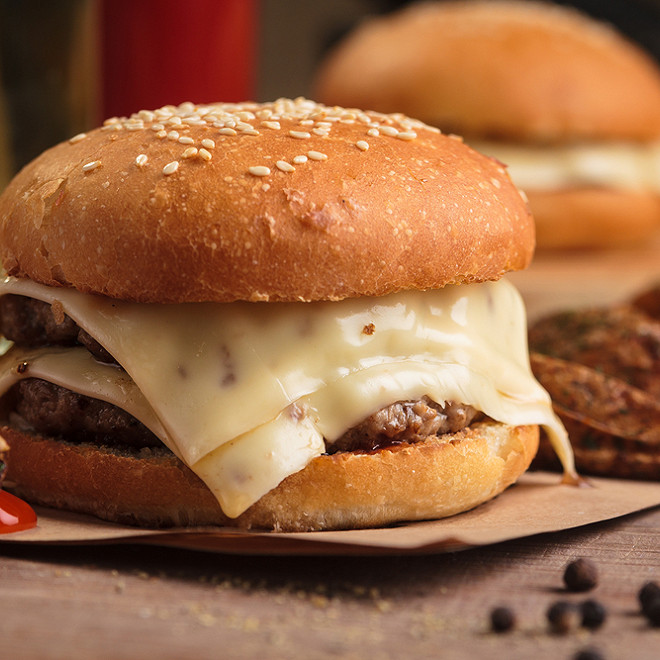

Hamburger

Here is by far the best homemade hamburger recipe you'll find on the internet. It takes what makes a hamburger good and add some others things to spice it up.
The visual and the aspect of a classical burger but with a taste that is more special !
ingredients
- Burger buns
- 250 g beef patty
- onions
- 2 slices of raclette cheese
- butter
Steps
- First, put some butter in a pan and add the onions to make them caramelized
- Once they're done, put them on a plate and make two meatballs with the patty adding some salt and pepper
- Put them on the plate and make it grill on the two sides
- Once they're brown, reduce the heat , put the once slice of cheese on each patty and put on the pan lid
- Wait until the cheese is melted
- Put the burger buns in the toaster
- Finally, put all the ingredients between the buns and Enjoy !!